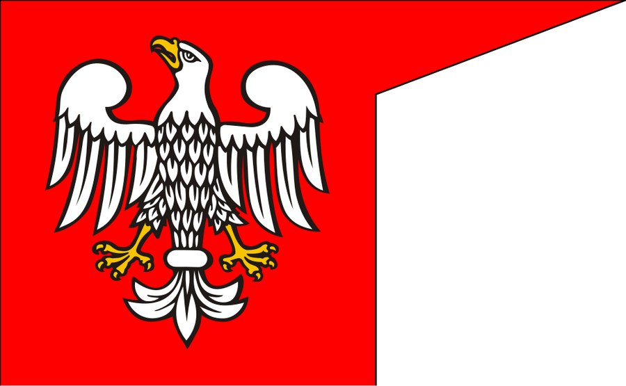

Masovian Piasts¶
House card¶
Seat |
Warsaw and Czersk (Janusz I); Płock and Rawa (Siemowit IV). [Historical record] |
Arms / sigil |
The Masovian (Piast) eagle. [Historical record] |
Words |
Między dwoma ogniami. “Between two fires.” [The saga’s invention] |
Patron / burden |
None canonical. Masovia is neutral ground where cousins meet. |
Masovian Piasts

Masovian Piasts · house — Image: Poznaniak, CC BY-SA 2.5 via Wikimedia Commons¶

Type |
house |
Status |
Historical record |
Note |
Piast cadet line at Warsaw, Czersk and Płock; married into both Gediminid branches. |
Lineage¶
A cadet line of the Piasts, small, proud and squeezed between the Order, Poland and Lithuania. Janusz I (c. 1346–1429) married Danutė Kęstutaitė, and his brother Siemowit IV (c. 1352–1426) married Aleksandra Algirdaitė in 1387, so the two brothers married both Gediminid lines. Henryk, bishop-elect of Płock, married Rimgailė Kęstutaitė in 1392 and was dead within a year. [Historical record; some details are uncertain] [Historical record]
Feuds & alliances¶
Steady allies of Vytautas through Janusz. Siemowit was a failed candidate for the Polish crown in 1382–84, which makes him a quiet rival of Jogaila; Henryk carried Jogaila’s offer to Vytautas before Ostrów (1392). The Order’s borders press on the duchy from the north.
Fate across the books¶
I: after the escape from Krėva, Vytautas runs first to Janusz and Danutė in Masovia (the refuge). II: Henryk’s embassy opens the road to Ostrów.
III–IV: the duchy stays between the two powers; Danutė outlives her brother’s era in the record.
V: the Masovian dukes remain neighbours at the edge of the cousins’ war. [The saga’s invention, minor]
Relations
Ally: Kęstutaičiai (Kęstutis’s line) (1382–…) — Danutė married Janusz I; Masovia sheltered Vytautas in 1382.
Members: Janusz I of Masovia
Connections¶
graph LR
janusz1["Janusz I of Masovia"]
kestutaiciai["Kęstutaičiai (Kęstutis's line)"]
masovian_piasts["Masovian Piasts"]
janusz1 -->|Member of| masovian_piasts
kestutaiciai -->|Ally| masovian_piasts
style masovian_piasts stroke-width:3px